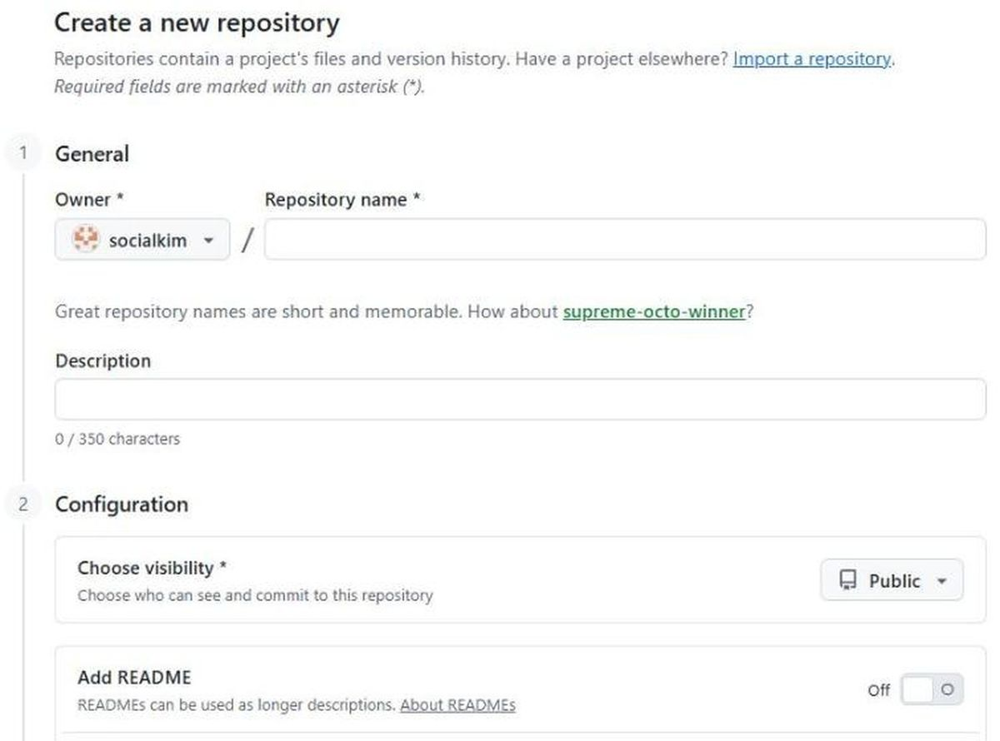
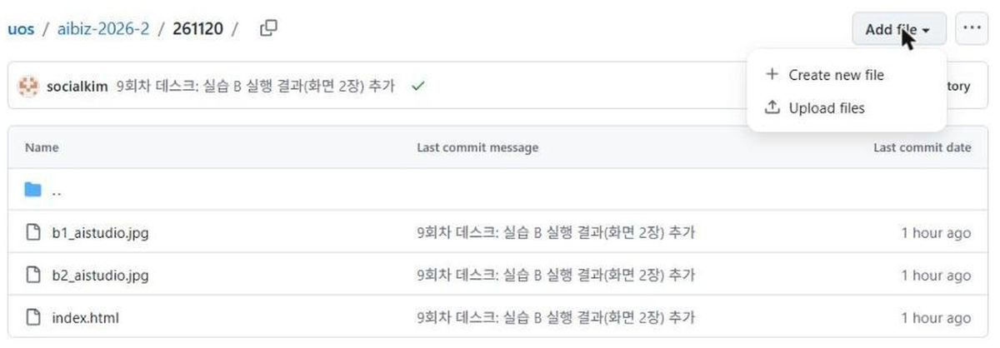
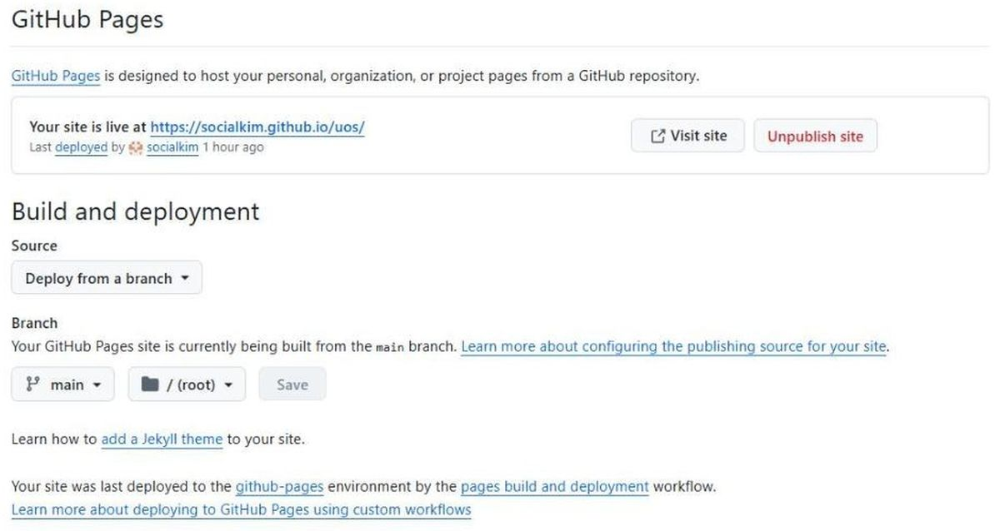
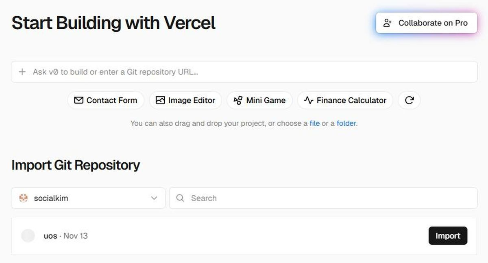
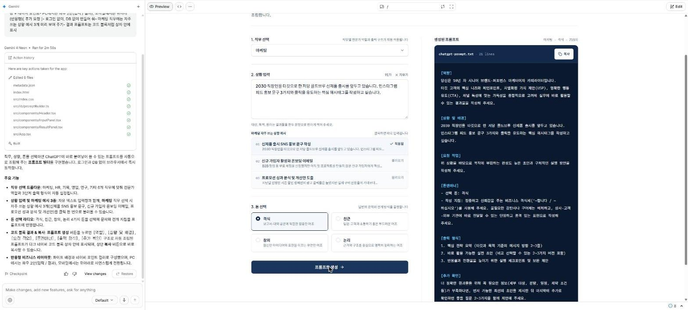
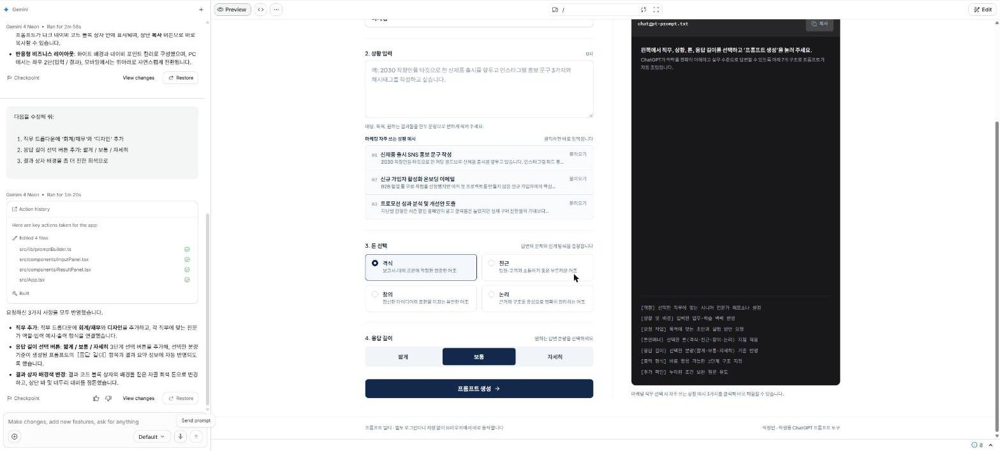

시작 전에
BEFORE WE START눌러서 하나씩 체크하세요. 체크는 이 브라우저에만 저장됩니다. 챗GPT 하나와 구글 계정 하나면 오늘 실습을 끝까지 할 수 있어요.
오늘의 흐름
150 MIN지난주 마무리 35분, 그다음부터 바이브 코딩. 실습은 색이 들어간 줄입니다.
| 구간 | 분 | 무엇을 |
|---|---|---|
| OPENING | 6 | 오늘의 지도 · 지난주 바로잡기 4 |
| RECAP 지난주 잇기 | 35 | 질문 3개에 답하기 · 에이전트 두 장 압축 · 실습 R 스킬 + MCP로 한 바퀴(15분) |
| PART 01 바이브 코딩이란 | 17 | 정의와 1년 반의 흐름 · 왜 경영학부 학생에게 · 한계 셋 |
| PART 02 개발 용어 지도 | 25 | 웹 서비스 네 층 · 용어 24개 · 프롬프트에 쓰는 법 |
| PART 03 도구 고르기 | 13 | 도구 세 갈래 · 무료 한도 · 크레딧 아끼는 법 |
| PART 04 실습 | 48 | 실습 A 한 파일 웹앱(20분) → 실습 B 앱 빌더(16분) → 실습 C 팀 주제 첫 화면(10분) + 패들릿 |
| CLOSING | 6 | 정리 · 기말 프로젝트로 잇기 · 이번 주 할 일 |
지난주 질문에 다시 답합니다
Q&A · 2026.11.13쉬는 시간에 나온 질문 세 개에 답이 흐렸어요. 녹음을 다시 듣고 정리했습니다.
- 스킬 = 노하우
- 어떻게 할지 적어 둔 지침 폴더(SKILL.md). 바깥 서비스에 닿지 않는다.
- 커넥터 = 손발
- 계정에 붙인 MCP 서버. 바깥 서비스 · 데이터에 닿게 해 준다.
- 플러그인 = 묶음 상자
- 스킬 + 커넥터(+ 명령)를 한 번에 설치하는 꾸러미.
- 컴퓨터가 꺼지면?
- 플러그인이냐 커넥터냐가 아니라 어디에 붙였나로 갈린다. 계정에 붙인 것은 웹 · 모바일 어디서나, 내 컴퓨터에 설정한 로컬 MCP · 로컬 스킬은 그 컴퓨터가 켜져 있어야 한다.
- 내 컴퓨터에서 도는 것
- AI 브라우저 · 데스크톱 에이전트. 내 로그인 그대로 움직이고, 실수도 내 컴퓨터에서 난다.
- 가상 컴퓨터에서 도는 것
- 피클 같은 클라우드 개인 에이전트. 내가 자는 동안에도 돌고, 연결한 메일 · 일정 정보가 그쪽에 놓인다.
- 맡기기 전에 둘
- 보내기 · 결제 · 전화는 사람 승인 뒤에. 탈퇴 전에 연결부터 해제.
- 바로잡기
- "피클 안에 클로드 소넷이 들어 있다"는 공식 문서에서 확인하지 못했다. 어떤 모델인지는 바뀔 수 있다.
- 1단계 · 파일을 스킬에
- 엑셀 · 파이썬으로 계산한 표를 스킬의 참고 파일로. 화면에 '기준일'만 적으면 발표용으로 충분하다.
- 2단계 · 스킬 안 스크립트
- 짧은 코드가 필요할 때 API를 부른다. API 키를 코드에 적지 않는다.
- 3단계 · MCP 서버
- API를 '도구'로 감싸 어느 AI에서나 @로 부른다. 데이터가 매일 바뀌어야 할 때만.
- 이미 있는 길부터
- KRX OPEN API(인증키 신청형) · 공공데이터포털 금융위원회 KRX 상장종목정보 · 한국투자증권 Open API의 공식 MCP
실습 R 스킬 + MCP로 에이전트 한 바퀴
LAB R · 15 MIN지난주에 못 한 실습입니다. 목표 한 문장을 주고 손을 뗍니다. 결과보다 과정을 보세요 — 계획을 먼저 보이는지, 도구를 몇 번 부르는지, 스스로 점검하는지. 챗GPT 무료 계정 기준이에요.
파일 — 지난주 데스크에서 가상 자료 · 실제 인물 · 조사 아님
- problem-brief-plugin.zip챗GPT 플러그인 zip
- jachwi_survey_가상.csv가상 설문 30명
- jachwi_interview_가상.txt가상 인터뷰 3명
클로드 · 제미나이로 하려면 지난주 데스크 실습 B의 세팅 표를 보세요.
MCP를 아직 못 붙였다면 플러그인 → 추가 → 사용자 지정 MCP 서버 추가 · 인증 없음
순서 5단계
- 1플러그인 → 추가 → 플러그인 압축 파일 업로드 → problem-brief-plugin.zip → 설치
- 2새 채팅에서 @problem-brief · @법령 MCP · @통계 MCP를 붙인다
- 3파일 2개(설문 CSV · 인터뷰 TXT)를 첨부한다
- 4아래 목표 문장을 붙여 넣고 손을 뗀다. 되묻는 질문에만 답한다
- 5세 가지를 센다 — 계획을 먼저 보였나 · 도구를 몇 번 불렀나 · 스스로 점검했나
목표 문장 그대로 붙여 넣기
돌려 본 뒤 — 사람이 직접 할 것 3가지
웹 서비스는 네 층으로 본다
THE MAP오늘 나오는 용어는 모두 이 네 층 가운데 하나에 붙어요. 실습 A는 맨 위 한 층만 만들고, 실습 B는 네 층을 도구가 대신 깔아 줍니다.
| 층 | 하는 일 | 식당으로 치면 | 여기 붙는 말 |
|---|---|---|---|
| 화면 · 프론트엔드 | 사용자가 보고 누르는 곳 | 홀 — 메뉴판과 테이블 | HTML · CSS · JavaScript · 반응형 · 히어로 섹션 |
| 처리 · 백엔드 | 화면 뒤에서 계산하고 규칙을 지키는 곳 | 주방 — 주문을 받아 요리 | 서버 · API · 인증(로그인) |
| 저장 · 데이터베이스 | 데이터를 표로 쌓아 두는 곳 | 창고와 장부 | DB · 테이블 · CRUD |
| 공개 · 배포 | 남이 접속할 수 있게 올려 두는 곳 | 가게 문 열기 · 간판 | Publish · 호스팅 · 도메인 · 깃허브 |
용어 카드 24
GLOSSARY · 4 × 6외우는 게 아니라 프롬프트에 씁니다. 묶음을 고르거나 검색하세요. 카드의 프롬프트 예시는 눌러서 복사할 수 있어요.
도구 — 무료로 어디까지
TOOLS · 2026.11코드를 얼마나 보게 되느냐로 세 갈래예요. 오늘은 채팅 안에서 한 파일(실습 A)과 브라우저 앱 빌더(실습 B)만 씁니다. 숫자는 2026년 11월 확인 기준이고, 내 화면의 숫자가 우선입니다.
| 도구 | 무료 한도 | 잘하는 것 | 주의 |
|---|---|---|---|
| 구글 AI 스튜디오 Build앱 빌더 · 오늘 권장 | 만들기는 무료 · 하루 한도는 내 계정 화면에 표시 | 구글 계정만으로 시작 · 저장 · 로그인까지 말로 | 게시 수와 많이 쓰는 기능에는 제한이 있다 |
| Lovable앱 빌더 | 하루 5크레딧 · 한 달 최대 30 | 디자인이 깔끔 · 계획 모드 · 만들면 바로 주소 | 요청 두세 번이면 하루치가 끝난다 |
| Bolt.new앱 빌더 | 하루 30만 토큰 · 한 달 100만 | 만드는 과정이 다 보인다 · 호스팅 포함 | 프로젝트가 커질수록 빨리 닳는다 |
| 제미나이 Canvas채팅 안 한 파일 | 제미나이 사용자 누구나 | 채팅 옆에서 바로 미리보기 · 한 화면 도구 | 여러 화면 · 저장이 필요하면 빌더로 |
| 챗GPT 캔버스 · 클로드 아티팩트채팅 안 한 파일 | 무료 계정 화면 기준으로 확인 | 평소 쓰던 채팅에서 그대로 | 한도에 걸리면 다른 채팅 도구로 옮긴다 |
개발자용 에디터 · 터미널(Cursor · 클로드 코드 · 코덱스)은 오늘 소개만 합니다.
크레딧 아끼는 법 4
계획은 밖에서
PRD는 챗GPT · 제미나이에서 먼저 쓰고, 빌더에는 완성된 한 장만 넣는다.
묶어서 한 번에
수정 사항 세 개를 모아 "1. … 2. … 3. …"으로 한 번에 보낸다.
참고 화면을 준다
말로 설명하기 어려운 디자인은 캡처 한 장. "이 화면처럼 여백과 글자 크기를".
코드를 들고 나온다
빌더의 Code 보기에서 코드를 복사해 다른 AI에 붙여 고친 뒤 다시 넣는다.
실습 A 한 파일 웹앱 — 커리어 성향 진단
LAB A · 20 MIN챗GPT 캔버스 또는 제미나이 Canvas에서 만듭니다. 첫 시도는 러프하게 — AI가 빈칸을 어떻게 채우는지 본 다음, 용어로 다듬어요.
A-1 첫 시도 8분 · 너무 자세히 말하지 않는다
할 일 — 미리보기에서 끝까지 눌러 보고, 마음에 안 드는 곳 세 군데를 메모합니다. 아직 고치지 않아요.
A-2 용어로 다듬는다 8분 · 묶어서 한 번에
볼 것 — 용어 하나가 화면의 어디를 바꿨는지. 창 너비를 줄이면 '반응형'이 보입니다.
A-3 파일로 받아 열어 본다 4분
실습 W 웹에 올리기 — 깃허브 → Vercel
LAB W · DEPLOY실습 A에서 받은 HTML 한 파일을 내 주소로 올립니다. 깃허브는 원본을 쌓아 두는 창고, Vercel은 그 원본을 사이트로 만들어 내보내는 매장이에요. 한 번 연결해 두면 그다음부터는 깃허브에 올리기만 하면 됩니다.
W-1 깃허브 가입 2분 · 무료
- 1github.com → 오른쪽 위 Sign up
- 2이메일 · 비밀번호 · Username(사용자 이름)을 넣습니다. 사용자 이름이 주소의 앞부분이 돼요 — 영문 · 숫자 · 하이픈만, 학번 · 전화번호는 넣지 않습니다
- 3사람 확인 퍼즐을 풀고, 이메일로 온 숫자 코드를 입력합니다. 요금제를 물으면 Free 그대로
W-2 저장소 만들기 1분 · 이름 하나만 정한다

- 1오른쪽 위 + → New repository
- 2Repository name에 영문 · 숫자로. 예: career-test
- 3Choose visibility는 Public 그대로, Add README를 켭니다
- 4맨 아래 Create repository
W-3 파일 올리기 2분 · 이름은 index.html

- 1실습 A에서 받은 파일 이름을 index.html로 바꿉니다. 이 이름이어야 주소만 쳐도 열려요
- 2저장소 화면에서 Add file → Upload files
- 3파일을 끌어다 놓고, 아래 초록 버튼 Commit changes
W-4 Pages 켜기 → 주소 하나 2분

- 1저장소 위쪽 탭 Settings → 왼쪽 메뉴 Pages
- 2Branch를 main, 폴더는 / (root)로 고르고 Save
- 31~2분 뒤 새로 고치면 주소가 뜹니다 — 사용자이름.github.io/저장소이름/
여기까지가 깃허브 Pages — HTML 한 파일은 이것으로 충분합니다. 빌더가 내보낸 프로젝트(React · Next.js)나 AI를 부르는 기능이 들어가면, 빌드와 비밀 값(API 키) 보관이 필요해서 Vercel 같은 배포 서비스로 갑니다.
W-5 Vercel 연결 → 주소 둘 4분 · 깃허브 계정으로 들어간다

- 1
- 2깃허브 창에서 Authorize Vercel. 저장소 접근을 물으면 Only select repositories로 오늘 만든 저장소만 골라도 됩니다
- 3Add New → Project → 내 저장소 옆 Import
- 4Framework Preset은 Other 그대로 두고 Deploy
- 51분쯤 뒤 주소가 나옵니다 — 프로젝트이름.vercel.app
Hobby 요금제는 무료이고 개인 · 비상업용만 쓸 수 있어요(수업 실습은 해당). 전화번호 확인이나 2단계 인증 안내가 나오면 직접 하세요. 화면 문구는 조금 다를 수 있습니다.
W-6 고쳐 본다 2분 · Vercel에서는 아무것도 누르지 않는다
- 1깃허브 저장소에서 index.html을 열고 연필 아이콘 → 제목 한 줄을 바꾸고 Commit changes
- 21분쯤 뒤 Vercel 주소를 새로 고칩니다. 바뀌어 있으면 자동 배포가 된 거예요
막힐 때 대부분 이름과 기다림의 문제
| 상황 | 확인할 것 | 이유 |
|---|---|---|
| Pages 주소가 404 | 1~2분 기다렸다 새로 고침 · 파일 이름이 index.html인지 | 반영까지 시간이 걸리고, 첫 화면 이름이 정해져 있어요 |
| Vercel 목록에 내 저장소가 없다 | Adjust GitHub App Permissions에서 저장소 추가 | 가입할 때 허락한 저장소만 보여요 |
| 고쳤는데 그대로다 | 깃허브에 커밋이 올라갔는지 | Vercel은 내 컴퓨터가 아니라 깃허브만 봅니다 |
| 배포가 빨갛게 실패 | 실패 기록(로그)을 복사해 AI에게 원인과 고칠 곳을 묻는다 | 문법 오류 · 빠진 파일 · 환경 변수가 대부분 |
| 올리면 안 되는 것 | 실제 개인정보 · 비밀번호 · API 키 | Public 저장소는 누구나 보고, 지워도 기록에 남아요 |
이런 서비스를 뭐라고 부르나 회의에서 나오는 말
| 말 | 뜻 |
|---|---|
| 호스팅 | 내 파일을 인터넷에 올려 두고 주소로 열리게 해 주는 일. 깃허브 Pages는 '정적 호스팅' |
| PaaS · 배포 플랫폼 | 서버 · 네트워크는 업체가 맡고 나는 코드만 올린다. Vercel · Netlify · Cloudflare Pages · Render · Firebase Hosting |
| CI/CD · 자동 배포 | 커밋하면 자동으로 빌드하고 내보내는 것 |
| v0 | Vercel이 만든 AI 빌더. 만들고 Publish 한 번이면 Vercel 주소가 나오고, 깃허브 연결도 설정에서 됩니다. 무료는 하루 메시지 수가 적어요(선택 실습) |
2026.11.20 확인 · 출처: GitHub Docs — GitHub Pages · Vercel Docs — Git · Vercel Hobby Plan · v0 Docs — Deployments. 요금 · 한도는 자주 바뀝니다.
실습 B 앱 빌더 — 맞춤 프롬프트 생성기
LAB B · 16 MIN이번에는 반대로 처음 한 번을 정확하게 줍니다. 무엇 · 핵심 기능 · 디자인 · 추가, 네 덩어리로 쓴 것이 PRD예요. 구글 AI 스튜디오 Build를 권하고, Lovable · Bolt도 같은 프롬프트로 됩니다.
B-1 PRD형 프롬프트 10분 · 통째로 붙여 넣기
볼 것 — 만드는 동안 화면에 지나가는 말(컴포넌트 · 반응형 …)과, 실습 A의 러프한 한 줄에 견줘 첫 결과가 얼마나 다른지.
수업 전에 직접 돌려 봤습니다 2026.11.20 오전 9시 20분 · 구글 AI 스튜디오 Build · 교수 계정(PRO 표시)


- 1ai.studio/build → 가운데 입력창 Describe an app and let Gemini do the rest에 프롬프트를 붙여 넣고 오른쪽 아래 화살표
- 2왼쪽에 Running for … 시간이 올라가고 파일 이름이 하나씩 체크됩니다. 여기 지나가는 이름(components · index.html · index.css)이 오늘 배운 용어예요
- 3가운데 Preview에 앱이 뜨면 직접 눌러 봅니다
- 4고칠 때는 왼쪽 아래 Make changes, add new features, ask for anything 칸에 · 게시는 오른쪽 위 Publish
유료(PRO) 계정에서 확인한 시간입니다. 무료 계정은 하루 한도가 내 화면에 표시되고, 더 느리거나 중간에 멈출 수 있어요. 멈추면 거기서 캡처하고 실습 A로 돌아갑니다.
B-2 고치고, 내 것으로, 내보낸다 6분 · 한도가 끝나면 거기서 캡처
실습 C 팀 주제 — PRD 한 장에서 첫 화면까지
LAB C · 10 MIN · TEAM팀별로 모입니다. 계획은 채팅에서, 만들기는 한 번만. 다 만들려고 하지 말고 첫 화면 하나만 만들어요. 아래 두 칸을 채우면 프롬프트가 완성됩니다(이 브라우저에만 저장).
프롬프트 — PRD부터 받는다 채팅 AI에 붙여 넣기
- 1PRD가 나오면 팀이 읽고 고친다 — 기능은 세 개까지, 가짜 데이터에는 '가상' 표시
- 2고친 PRD를 캔버스나 빌더에 넣어 첫 화면 하나만 만든다
- 3링크나 캡처를 패들릿 '팀' 칸에 올린다
막혔을 때 쓰는 말 5
WHEN STUCK코드를 읽지 못해도 됩니다. 코드를 읽는 대신 설명하게 하세요.
| 상황 | 이렇게 말한다 | 왜 |
|---|---|---|
| 빨간 오류가 떴다 | 이 에러 메시지를 그대로 붙일게. 원인과 고칠 곳을 먼저 설명하고, 내가 좋다고 하면 고쳐 줘. | 설명 없이 고치게 하면 다른 곳이 깨진다 |
| 고쳤더니 더 나빠졌다 | 방금 변경 전으로 되돌려 줘. | 덧대어 고치는 것보다 되돌리기가 싸다 |
| 큰 걸 시키려 한다 | 코드를 쓰기 전에 계획부터 보여 줘. 내가 확인한 다음에 시작하자. | 계획 단계에서 고치면 크레딧이 거의 안 든다 |
| 무슨 코드인지 모르겠다 | 이 화면이 어떤 조각으로 이뤄졌는지 사이트맵으로 정리해 줘. 코딩을 모르는 사람이 읽을 수 있게. | 구조를 알아야 어디를 고칠지 말할 수 있다 |
| 한도가 끝났다 | 지금까지의 전체 코드를 파일 하나로 내보내 줘. | 코드는 내 것 — 다른 AI에 붙여 이어서 한다 |
패들릿에 올릴 것
PADLET출석 확인을 겸합니다. 잘 만든 화면보다 무엇을 시켰고 무엇이 달라졌나를 적은 글이 다음 주 재료가 돼요.
실습 A · B
- 결과 화면 캡처(또는 주소)
- 프롬프트에 쓴 용어 세 개
- AI가 제멋대로 채운 곳 한 줄
실습 C
- 팀 문제 한 문장
- PRD에서 남긴 기능 세 개
- 첫 화면 링크 또는 캡처
막힌 곳
- 어디서 멈췄는지 한 줄
- 에러 메시지는 그대로 붙인다
- 다음 주 수업 시작에 모아서 답한다